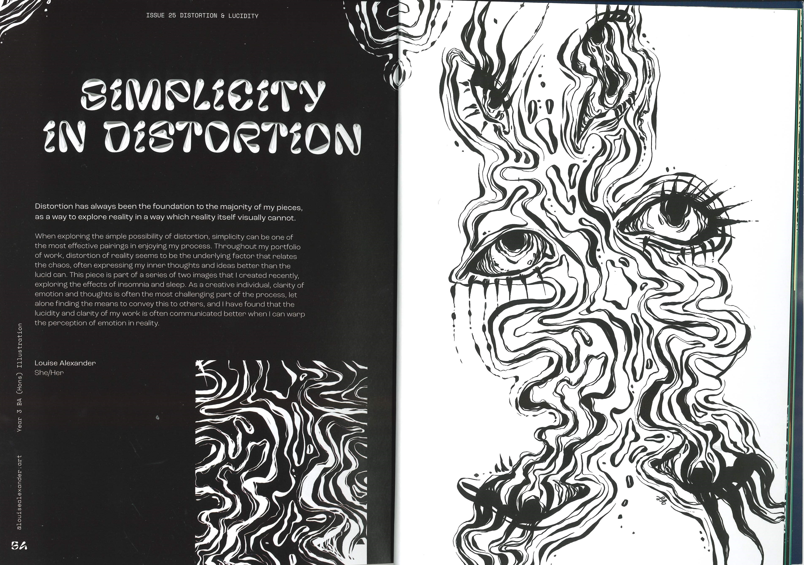
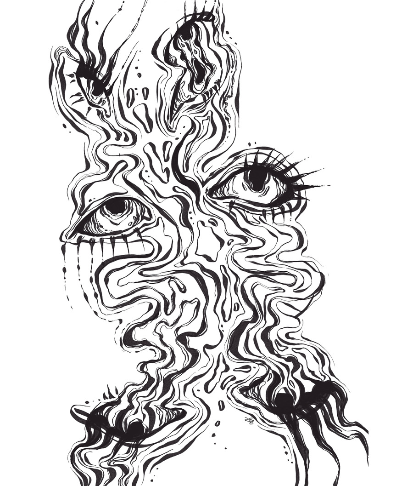
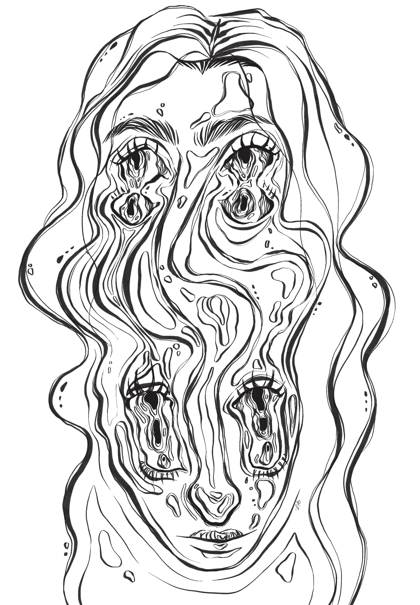
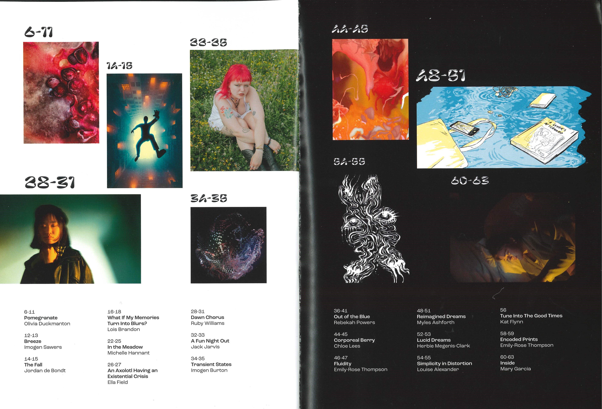

Simplicity in Distortion
Storehouse Submission
These two images were created in Procreate, exploring the effects of insomnia and sleep on human perception. The first piece was published in Storehouse Magazine, the Student Union magazine of Norwich University of the Arts, scroll to see more.